US Healthcare • Stakeholder Research • SaaS
WellGuard

The project is aimed to redesign the user experience for WellGuard, a platform-powered, AI-first suite, to better analyse, customise, and democratise data for stakeholders like payers, providers, members, and governments, ultimately empowering better care.
AProblem
What was broken for stakeholders?
Healthcare efficiency is undermined by excessive administrative tasks for physicians, lengthy provider onboarding that can take up to three months, and a limited range of 3–4 plan options from most payers. These issues reduce patient care quality, delay service availability, and restrict plan flexibility, highlighting the need for streamlined processes and expanded choices.
BMy Role
What was my contribution?
Specifically, I managed the member space where users transfer patient details between physicians seamlessly. I was responsible for designing screen layouts to track records across California, New Mexico, and Utah while also devising workflows and designs for managing fallout.
As the Experience Designer for WellGuard, I:
- Identified key UX issues in existing flows
- Led ideation with sketches and wireframes
- Refined designs through iterative feedback to meet user and business goals
CResearch
What did stakeholders and providers tell us?
Objective
The objective of the stakeholder discussions and interviews was to align with key expectations, gather requirements, and address challenges in reducing administrative burdens on providers and streamlining the HR-managed provider onboarding process.
Stakeholders Involved
Product Owners
Provided insights into business goals, the need to streamline healthcare processes, and key performance indicators.
HR Teams
Discussed technical requirements for integration with existing systems and the challenges of the lengthy provider onboarding process.
Focus Areas
Project Goals & Objectives — aligning design and development with business goals
Pain Points — lengthy onboarding (up to 3 months) impacting efficiency
Requirements Gathering — seamless integration and reduced onboarding time
Collaboration Preferences — effective channels between dev and HR teams
Where Providers Felt the Most Friction
find Data Access Speed too slow
report System Integration difficulties
feel the User Interface isn't intuitive
have Data Accuracy concerns
Sample size: 30 providers
DKey Insights
What actually shaped the direction?
Onboarding time was the real blocker, not a side complaint
HR teams stressed that the up-to-three-month onboarding cycle was actively hurting their ability to respond to staffing needs — this made speed of onboarding the top priority, over adding new features.
Speed beat polish
40% of providers pointed to slow data access as their biggest frustration, versus only 15% citing the interface itself — meaning the fix needed to be structural (information architecture, load paths), not cosmetic.
Integration gaps were creating invisible manual work
35% reported system integration difficulties, tracing back to inconsistent components and handoff gaps between design and engineering rather than the product's core flows.
Domain language was slowing down the whole team, not just users
The complexity of US healthcare terminology was a barrier for new team members as much as for providers, meaning the fix had to live in shared vocabulary, not just UI copy.
EDesign Decisions
How did each insight turn into a call?
Insight → Onboarding time was the real blocker
Decision: Redesigned the requirement-gathering-to-production pipeline itself, not just the onboarding screens, so friction was addressed at the process level. This meant mapping every handoff between HR, POs, and design upfront so onboarding time could shrink without cutting corners on compliance.
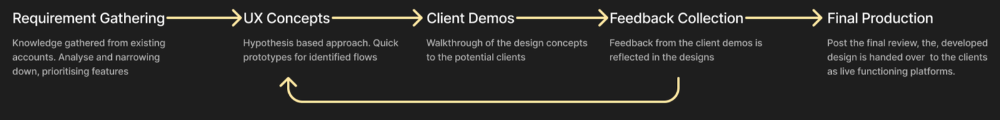
Insight → Speed beat polish
Decision: Prioritized information hierarchy over visual refinement in early ideation — surfacing the data providers needed first, and pushing secondary details behind progressive disclosure, since the research showed speed of access mattered more than how the screen looked.
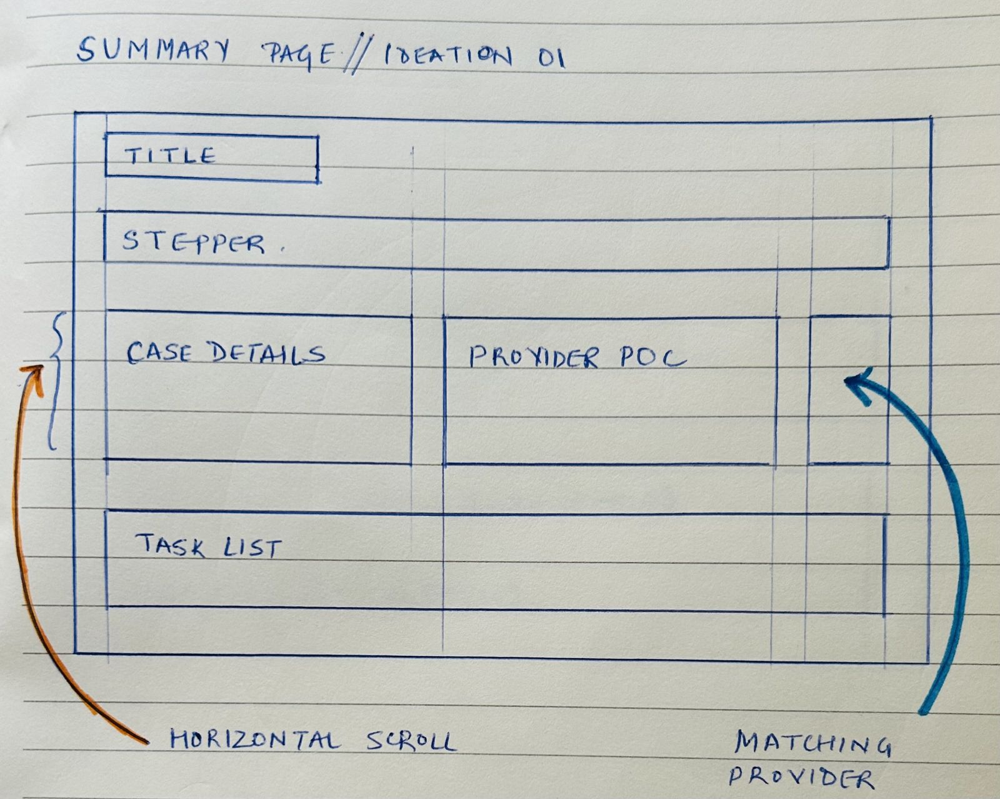
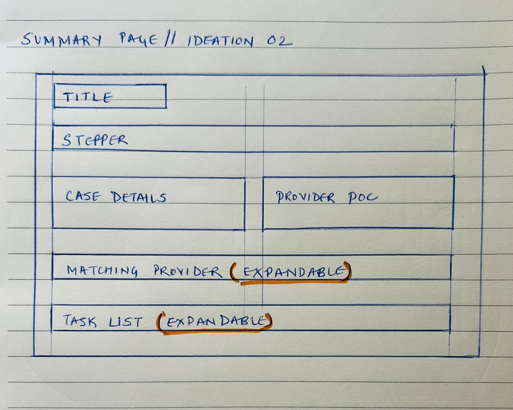
That hierarchy was then validated end-to-end as user flows for both core audiences, provider and admin/HR, to make sure the shortest path to key data held up across real tasks, not just individual screens.
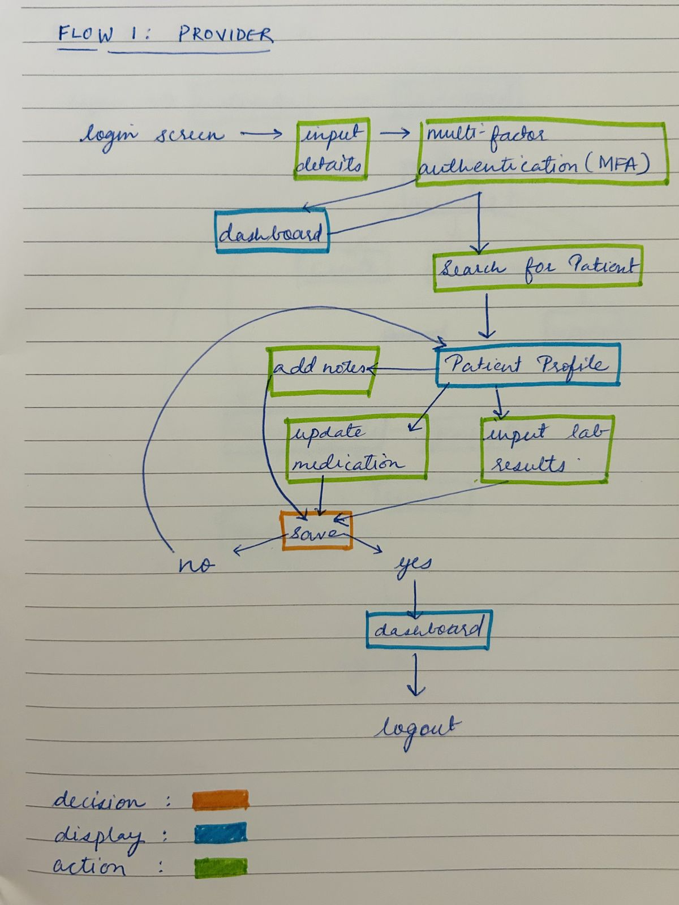
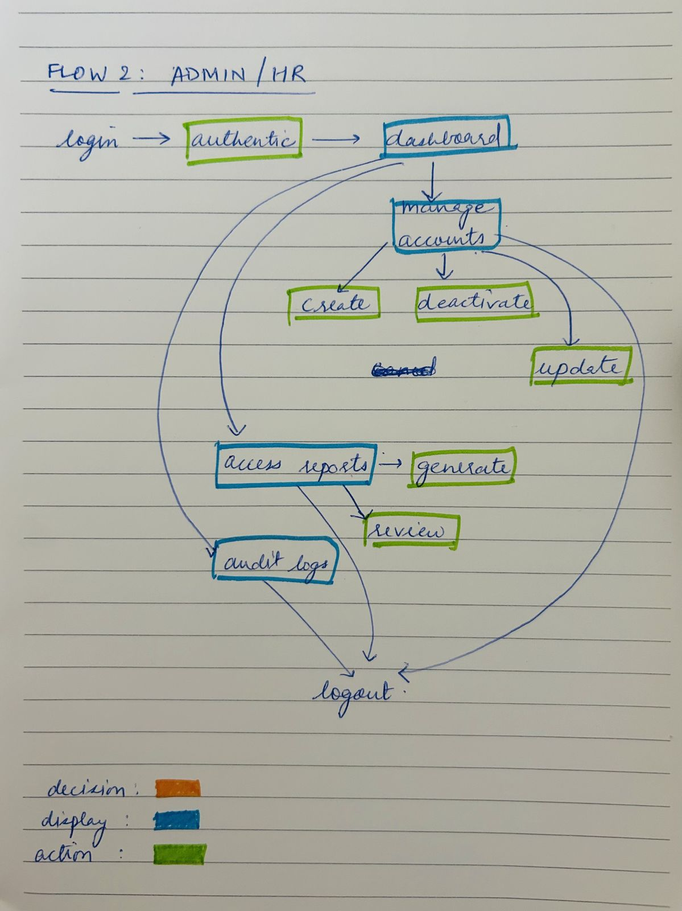
Insight → Integration gaps were creating manual work
Decision: Built a Figma design system with defined states and consistent spacing before scaling to more screens, so the dev team could code against a single source of truth instead of reconciling inconsistent components during integration.
Color Palette
Color psychology was applied from the healthcare perspective.
Messages
When data is heavy, the messages should give the user the highlight.
Spacing
Spacing didn't just make the designs cleaner but helped the dev team code better.
Components
Created states which made it easier for different scenarios.
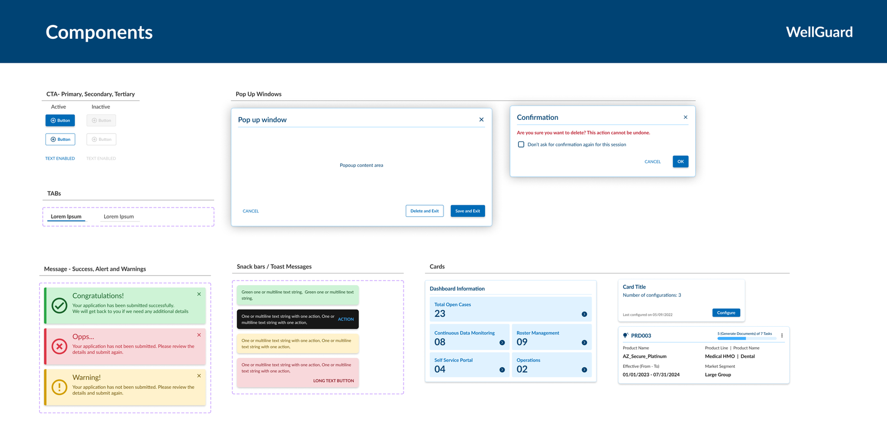
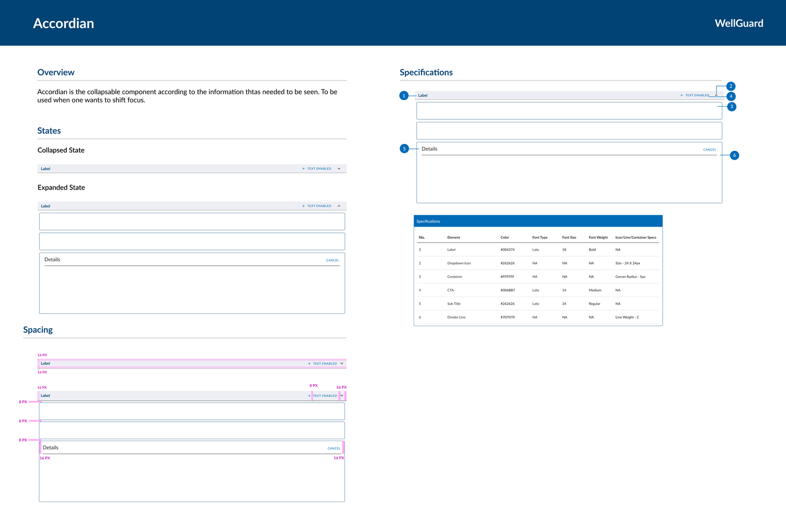
Insight → Domain language was slowing the whole team down
Decision: Created a shared healthcare terminology glossary as a working artifact for the team, not just a reference doc, so that complex US healthcare terms were applied consistently across designs, dev tickets, and conversations with HR.
Facilitated Understanding
Helped the team quickly grasp and apply complex terms throughout the project.
Assisted Team Members
Provided a valuable resource for new team members, ensuring consistency and reducing the learning curve.
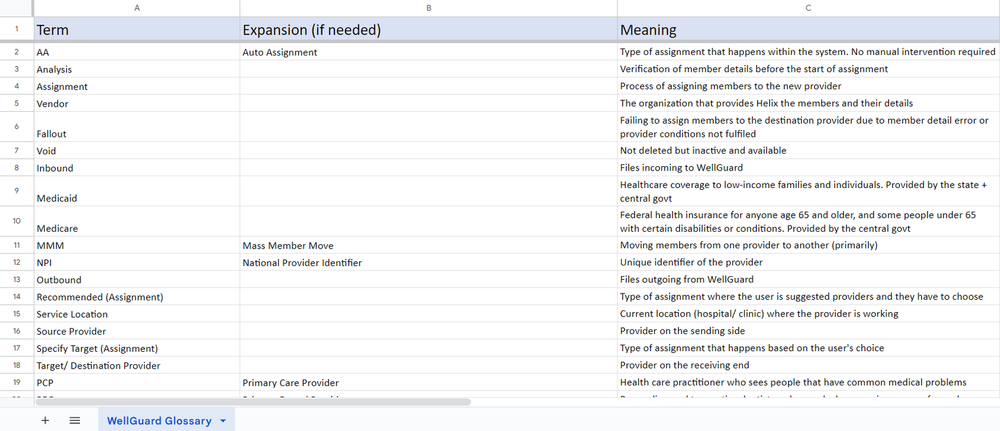
FFinal Solution
What did it look like end to end?
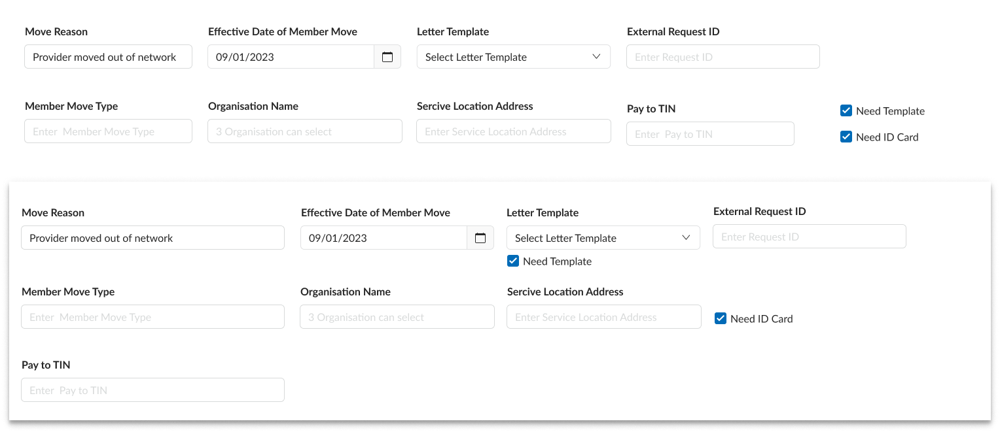
Responsive Designs: As the product was going to cater to a new audience with various types of devices, breakpoints were introduced in the designs.
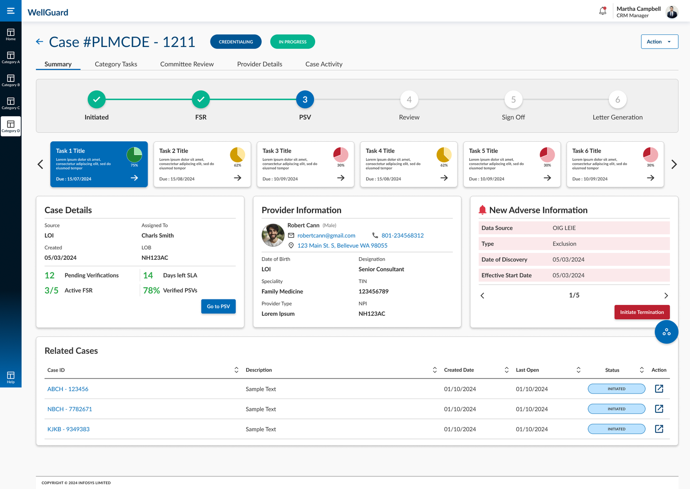
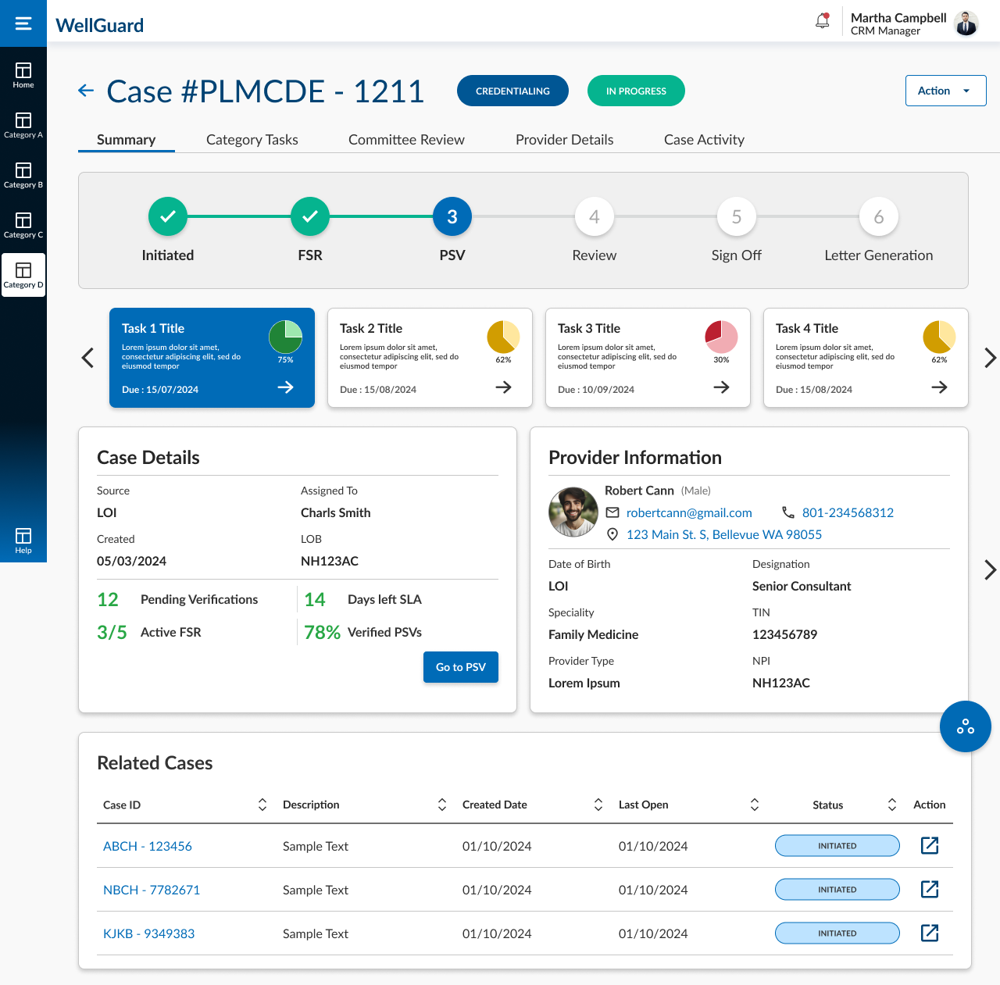
GValidation & Collaboration
How was it tested against reality?
Continuous Communication
Always in the loop with both teams, understanding their restrictions and possibilities.
Documentation
JIRA was used to document the entire process, to know exactly which stage the product was at.
Challenges & Solutions
During the initial stages there were some issues around creating a smooth experience and shared understanding — after a few workshops, all teams were aligned.
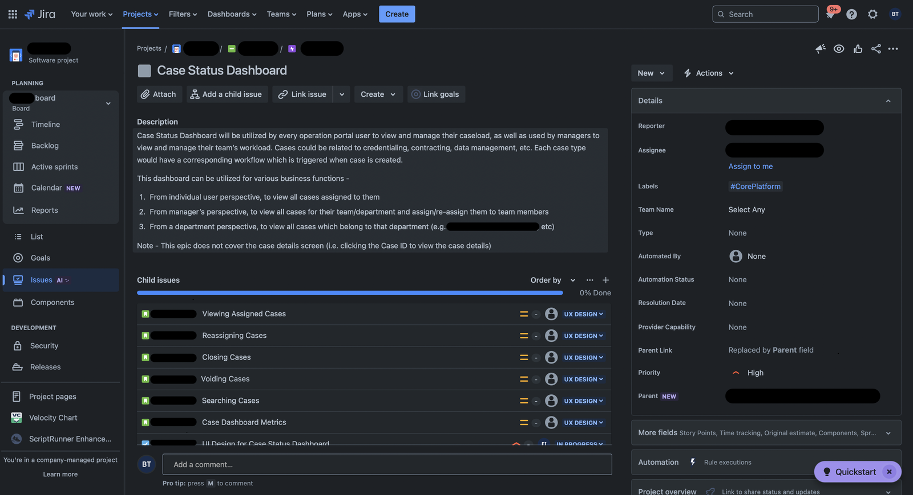
Above: Reference for JIRA usage
HOutcome
What changed as a result?
Streamlining Patient Onboarding
Reduced onboarding friction for health insurance users through simplified flows and clear information design, resulting in a more confident and efficient sign-up experience.
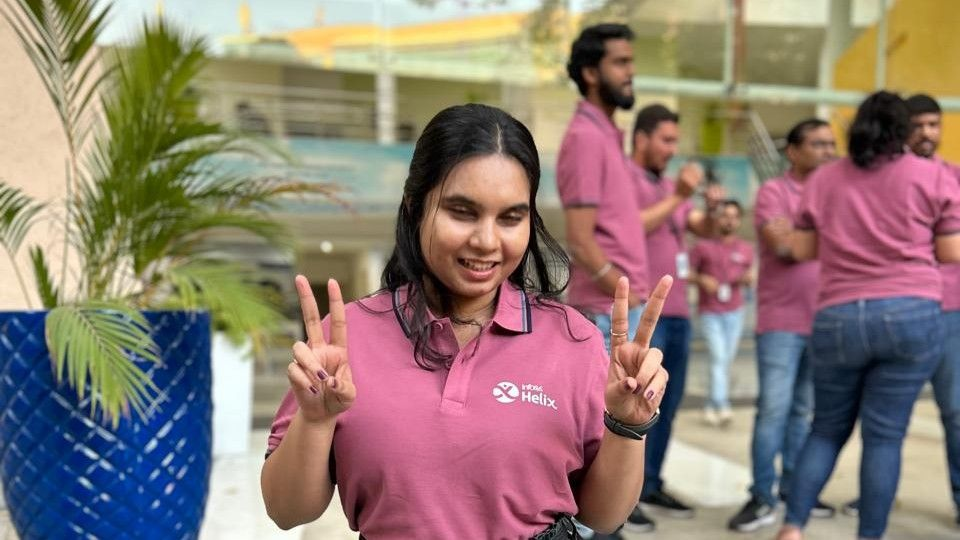
Stakeholder Trust
Feedback Loop
Once demos were done, the client would send feedback, which was analyzed and applied as needed.
Client Traction
A 28% increase in client acquisition within 12 months, across clients from California, New Mexico, and Utah.
Client Satisfaction
Clients were satisfied and continued to trust and use the product.
Product Improvement
ILearnings
What I'd carry into the next project
Cadence over convenience
Client check-ins happened when questions came up rather than on a fixed rhythm. In hindsight, a standing weekly sync would have surfaced misalignment earlier and made feedback loops predictable instead of reactive.
Bring engineering in at the concept stage, not the handoff stage
Looping the dev team in only once designs were fairly settled meant some technical constraints surfaced late, forcing rework that a five-minute conversation earlier on would have avoided.